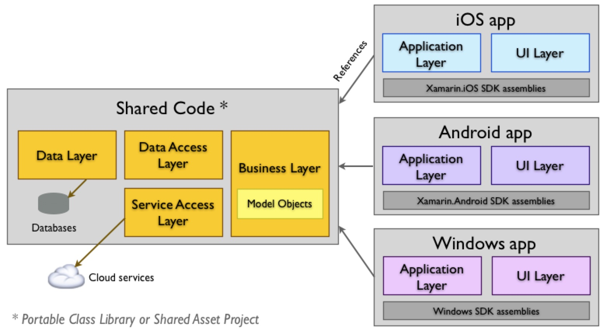

Mobile App Entwicklung
Lektion 3
IOC, Testing
Lektion 3: Themen
- IOC (Inversion of Control)
- Testing
Rückblick
- Jeder hat ein Projekt auf GitHub eingerichtet
- Jeder hat alle benötigte Werkzeuge eingerichtet
- Jeder kann mit dem Simulator oder Gerät ausführen
-
Habt ihr eine
.gitignoreDatei erstellt?bin/undobj/ausschliessen- Unerwünschte Dateien aus dem Repo löschen
Übersicht Lektionen
- Vorstellung, Einführung und Framework-Evaluation
- Evaluation, Selektion und Aufsetzen eines Frameworks
- IOC und Testing
- Popupelementen (Dialogen) und Steuerelemente
- LK1; MVVM, Bindings, Controls
- Benachrichtigungen & Biometrie
- Datenbanken (SQLite); HTTP Client
- LK2; Hybrid-Apps
- MLZ Präsentationen; Themen nach Wahl
Dokumentationen
Die folgende Online-Referenzen sind sehr nützlich und werden statt einem Buch eingesetzt.
Geschichte Mauis
- Die Linux .NET Laufzeitumgebung Mono wurde von der Firma Ximian entwickelt
- Aus Ximian wurde die Firma Xamarin
- Das Produkt Xamarin ermöglicht iOS/Android Apps mit C# mit Mono
- In 2016 wurde Mono von Microsoft gekauft
- Wird immer weiter in .NET integriert
- Xamarin wurde in 2022 durch MAUI ersetzt/erweitert
Siehe den Wikipedia Eintrag dazu.
Maui mit Native UIs
- Platforms/iOS & Platforms/Android Verzeichnisse
- Ein 1:1 Mapping zu den jeweiligen Plattform-APIs
- Neue APIs werden innerhalb 24 Stunden angeboten
- Core Elemente werden geteilt
- UIs sind Plattform-spezifisch und werden nicht geteilt (ausser mit Hybrid-UIs)
Diagramm Xamarin Native
Cross-Plattform UIs
- UIs werden geteilt und mit XAML geschrieben
- Bietet
DependencyService(IoC) für plattformabhängige Features an - Bietet Schnittstellen für gemeinsame Features (wie z.B. Dialogs, Notifications, usw.) an
- Bietet Unterstützung für Navigation an
Beispiele Xamarin Forms

Übersicht Architektur

.NET Standard
- Definiert ein gemeinsames API oder Schnittstelle
- Je höher die Version desto breiter die API Oberfläche
- Version 2.1 ist die neuste Version
- Mono implementiert .NET Standard for iOS/Android
- .NET Framework und .NET implementieren sie for Windows
- .NET 6 is die allerneuste und aktuelle LTS* Version (Nov. 2021)
LTS = Long-Term Support
.NET Standard APIs
- File (System.IO)
- Collections & LINQ
- Task &
async/await - Http (Client) (System.NET)
- Und viel mehr...
Erster Blick
- Einfaches Applikation ausführen und debuggen
- Tests ausführen und debuggen

Könnt ihr das auch?

Noch nicht...
...aber gleich!
IoC
Was ist IOC?
- IoC bedeutet [I]nversion [o]f [C]ontrol
- Ist das generelle Konzept implementiert von DI
- Equivalent zu [D]ependency [I]nversion [P]rinciple
- Transferiert Kontrolle vom Aufgerufenen zum Aufrufer
- Das Muster erstellt einen Graph von Komponenten von oben nach unten
- Ein Container unterstützt oder implementiert IOC*
*Ein Container ist optional aber man wird fast sicher eins einsetzen wollen...
IoC: Anforderungen
Wir würden gerne mit Abstraktionen arbeiten ein IoC Container enthält Registrierungen von- Abstraktionen...
- ...zu Implementierungen
Was ist DI?
- DI steht für [D]ependency [I]njection
- Abhängigkeiten mitgeben statt erstellen
- Implementiert IoC

Genug Theorie!
Bottom-up vs. Top-down
// Bottom-up (callee makes decisions)
var pilot = new LukeSkywalker();
// weapon and helmet initialized in constructor
// Top-down (caller makes decisions)
var pilot = new LukeSkywalker(
new LaserBlaster(),
new BrainBucket()
);
IoC: Vorteile
- Plattformspezifischen Implementationen für Testing ersetzen
- Implementation basierend auf eine Bedingung selektieren
- iOS vs. Android
- Production vs. Testing
- "Constructor injection"
- ist einfach zu verstehen
- vereinfacht das identifizieren von Abhängigkeiten
IoC: Workflow
- Schnittstellen/"Services" registrieren
Container.Register<Interface, Implementation>()
- IoC versiegeln (keine weitere Registrierungen erlaubt)
- Schnittstellen/"Services" aus dem Container holen
Container.Resolve<Interface>()
Warum versiegeln?
- Ein container wird versiegelt sobald eine Instanz gefordert wird
- Wie sonst könnte man ein Singleton garantieren?
Singleton Verletzung
// Register
var container = CreateContainer()
.RegisterSingle<IToy, StarWarsLegos>();
// Seal
var services = container.GetServices();
// Request
var toy = services.GetInstance<IToy>();
// Error!
container.RegisterSingle<IToy, BoardGame>();
Wann registrieren?
- Für Schnittstellen immer
- Nicht registrierte Objekte sind immer transient
- Benutzt das Container, um Objekte leicht zu erstellen
- Weicht eine Abhängigkeit auf Constructor-Parametern aus
Beispiel Registrierung
class A { }
class B { B(A a) { } }
class C : A { }
var s1 = CreateContainer().GetServices();
var b = s1.GetInstance<B>(); // uses A
var s2 = CreateContainer()
.Register<A, C>()
.GetServices();
var b = s2.GetInstance<B>(); // uses C
Container übermässig einsetzen
// Get all objects...
var toy = services.GetInstance<IToy>();
var player = services.GetInstance<IPerson>();
var game = services.GetInstance<IGame>();
// Use them
game.Start(player, toy);
Was könnte man sonst tun?
Ein übergeordnetes Konzept einsetzen.
var services = CreateContainer()
.RegisterSingle<IGame, Game>()
.RegisterSingle<IToy, StarWarsLegos>()
.RegisterSingle<IPerson, Child>()
.GetServices();
class PlayDate
{
PlayDate(IGame game, IPerson person, IToy toy) { }
}
// Get new play date (transient)
services.GetInstance<PlayDate>().Start();
Transients und Singletons
- Singleton: eine Instanz instance pro Container
- Transient: neue Instanz pro Aufruf
- "lifestyle mismatch" => Transient injiziert zu einem Singleton
Lifestyle mismatch
class StarWarsLegos
{
StarWarsLegos(IPerson owner) { }
}
var services = CreateContainer()
.RegisterSingle<IToy, StarWarsLegos>()
.Register<IPerson, Child>()
.GetServices();
var toy = services.GetInstance<IToy>(); // CRASH
Anti-pattern: Container injizieren
Abhängigkeiten werden vom Aufrufer verborgen.
bool CanFly(Container container)
{
var droid = container.GetInstance<IDroid>();
var pilot = container.GetInstance<IPilot>();
return droid.Online && pilot.Awake;
}
Anti-pattern: Global Container benutzen
Abhängigkeiten werden vom Aufrufer verborgen.
bool CanFly()
{
var droid = ServiceLocator.GetInstance<IDroid>();
var pilot = ServiceLocator.GetInstance<IPilot>();
return droid.Online && pilot.Awake;
}
Code smell: new
- Nicht anpassbar
- Kann nicht "gemockt" werden
- Nie
newfür ein Singleton einsetzen - Factories sind flexibler
newist für kleine, "mutable" Objekte i.O.
IoC in Xamarin
Ioc in Android
// Shared interface
public interface ISomeService {
void Foo();
}
// Android specific implementation. Registration via attribute.
using System;
using FormsTesting.Droid;
using Xamarin.Forms;
[assembly: Dependency(typeof(SomeService))]
namespace FormsTesting.Droid {
public class SomeService : ISomeService {
public void Foo() {
throw new NotImplementedException();
}
}
}
IoC von Xamarin
- Ist ein muss für "Custom Controls"
- Ist wiederum ein ziemlich einfaches Container mit vielen Einschränkungen
- Wir können es überall einsetzen müssen das aber nicht
IOC: Schnittstelle definieren
public interface IDialogService {
Task Show(string title, string message);
Task<bool> Show(string title, string message, string positive, string negative);
}
IOC: Schnittstelle einsetzen
DeleteItemCommand = new Command(async () => {
var confirmed = await dialogService.Show("Confirm", "Are you sure you want to delete the item?", "Yes", "No");
if (confirmed)
{
Items.Remove(Items.First(x => x.IsSelected));
}
});
IOC: DialogService
Implementation der Schnittstelle:
public class DialogService : IDialogService {
public DialogService(Page page) {
_page = page;
}
public async Task Show(string title, string message) {
await _page.DisplayAlert(title, message, "Cancel");
}
public async Task<bool> Show(string title, string message, string positive, string negative) {
return await _page.DisplayAlert(title, message, positive, negative);
}
private readonly Page _page;
}
IOC: MockDialogService
Implementation eines "Mocks":
public class MockDialogService : IDialogService {
public Task Show(string title, string message) {
return Task.CompletedTask;
}
public Task<bool> Show(string title, string message, string positive, string negative) {
return Task.FromResult(true);
}
}
Fragen?

IoC
- Registrierung
- Constructor definieren
- Objekt durch IoC erstellen lassen
Übungen
IoC mit mindestens einen Dienst integrieren; Beispiele:
- On/Offline service
- UI-spezifischer Dienst (z.B. DialogService)
- Data-Provider (z.B. mit Verbindung über API oder DB; kann vorerst in Speicher implementiert werden)
Testing
Testing
Wir wollen möglichst viel Code mit Tests abdecken.
- Es gibt verschiedene Testing Frameworks:
- NUnit
- MSUnit
- XUnit
- Wir bevorzugen "NUnit" weil das API besser und Test-Runner besser ist
Testing Projekt erstellen
- Ein "NUnit Test Project" im eigenen Solution erstellen
- "Shared Code" Projekt vom Test-Projekt referenzieren
- Ein Test-Klasse per "Service" erstellen
- Basis-Klassen und Hilfsmethoden können nützlich sein, um dupliziertes Code zu vermeiden
Testing: IoC aufsetzen
[TestFixture]
public class Tests {
[OneTimeSetUp]
public void Setup() {
// Potentially register different services to set up a "predictable" test environment.
App.Services.RegisterInstance(new NavigationPage().Navigation);
App.Services.Register<IViewMapper, ViewMapper>(Lifestyle.Singleton);
App.Services.Register<ITodoViewModelFactory, TodoViewModelFactory>(Lifestyle.Singleton);
App.Services.Register<ITodoItemProvider, TodoItemProvider>(Lifestyle.Singleton);
App.Services.Register<MainViewModel>(Lifestyle.Singleton);
App.Services.Register<TodoListViewModel>(Lifestyle.Singleton);
App.Services.Register<TodoItemViewModel>(Lifestyle.Transient);
App.Services.Register<IDialogService, MockDialogService>(Lifestyle.Singleton);
}
}
Testing: Test schreiben
[TestFixture]
public class Tests {
// Setup excluded
[Test]
public void TestEmptyTodoCantBeSaved() {
var listViewModel = App.Services.GetInstance<TodoListViewModel>();
var todoItemViewModel = App.Services.GetInstance<ITodoViewModelFactory>()
.Create(new TodoItem(), listViewModel);
Assert.That(todoItemViewModel.SaveCommand.CanExecute(null), Is.False);
todoItemViewModel.Title = "Title";
Assert.That(todoItemViewModel.SaveCommand.CanExecute(null));
}
}
Fragen?
Testing
- Setup
- Ausführen
- Debuggen
Übungen
Mindestens einen Test im eigenen Projekt erstellen und ausführen